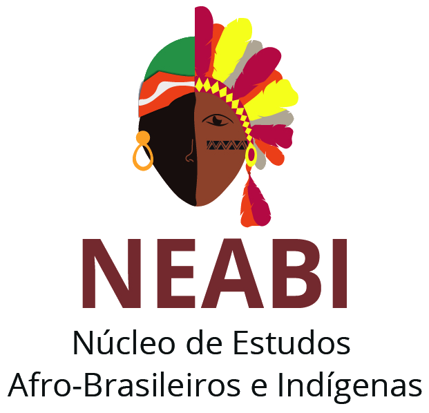

O NEABI (Núcleo de Estudos Afro-Brasileiros e Indígenas) é um órgão presente em escolas, institutos federais e universidades, voltado ao desenvolvimento de atividades de ensino, pesquisa e extensão, com o objetivo de valorizar, compartilhar e promover conhecimentos sobre as culturas afro-brasileira e indigena. Atualmente, os NEABIs estão presentes em diversas instituições de ensino pelo Brasil, atuando em conjunto com outras organizações, como a ABPN (Associação Brasileira de Pesquisadores Negros) e o CONNEABs (Consórcio Nacional de Núcleos de Estudos Afro-Brasileiros, NEABIs e Grupos Correlatos), que contribuem para a articulação de iniciativas e o fortalecimento das discussões sobre as relações étnico-raciais.
O NEABI (Núcleo de Estudos Afro-Brasileiros e Indígenas) do IFSC Campus Gaspar foi criado em 2015, sendo o primeiro núcleo desse tipo no IFSC e servindo de referência para a criação de outros núcleos nos demais campus. Sua criação está relacionada à necessidade de valorizar a história, a cultura e a memória das populações afro-brasileiras e indígenas, que historicamente foram pouco representadas no ensino. O núcleo também está relacionado às Leis nº 10.639/2003 e nº 11.645/2008, que tornaram obrigatório o ensino da história e da cultura afro-brasileira e indígena nas escolas.

Luiz Herculano de Sousa Guilherme é doutor em Língua Portuguesa pela UFRJ, professor do IFSC – Câmpus Gaspar e assessor de Ações Afirmativas, Equidade e Inclusão da instituição. Também é coordenador nacional do Projeto Afrocientista e, na gestão 2026–2028, assumIU a Secretaria Executiva da Associação Brasileira de Pesquisadores Negros (ABPN). Foi idealizador e coordenador do NEABI do IFSC Gaspar, onde teve a iniciativa de viabilizar projetos de pesquisas, coordenando as atividades e proporcionando bolsas para que estudantes desenvolvessem pesquisas sobre questões étnico-raciais, incentivando a educação antirracista, a inclusão e a valorização da cultura afro-brasileira no instituto federal.
Iniciativas como a do NEABI são importantes para combater o racismo por meio de ações educativas e de conscientização, enfrentando o preconceito e as desigualdades raciais no ambiente escolar. Além disso, promovem a valorização da história, da memória, da ancestralidade e dos conhecimentos dos povos negros e indígenas, por meio de rodas de conversa, oficinas culturais e eventos acadêmicos que incentivam a reflexão sobre as relações étnico-raciais. Também contribuem para tornar o câmpus um espaço de respeito à diversidade e de acolhimento diante de situações de racismo, além de fortalecer a articulação com a comunidade por meio de parcerias com movimentos sociais e da participação em suas atividades.
O estudo das relações étnico-raciais é muito amplo, podendo abranger diversas áreas de interesse, como música, teatro, cinema e outras formas de expressão. Dessa forma, é possível explorar esses assuntos de maneira mais leve e dinâmica, pesquisando sobre suas histórias e problemáticas, mas também se divertindo, desenvolvendo a criatividade e se orgulhando dos conhecimentos adquiridos ao longo do projeto.
Tendo em vista isso, diversos alunos utilizaram desses conhecimentos e de seus interesses para desenvolver pesquisas e até mesmo apresentá-las em congressos por todo o país! No IFSC Gaspar, por exemplo, diversos jovens já apresentaram trabalhos no XIV Congresso Brasileiro de Pesquisadores(as) Negros(as) (COPENE), abordando temas como ações afirmativas, racismo, representatividade negra, diversidade cultural e questões étnico-raciais em diferentes áreas do conhecimento.
Essas oportunidades são resultado do incentivo à pesquisa e à participação dos estudantes promovidos pelo NEABI, que, sob a coordenação do professor Luiz Herculano de Sousa Guilherme, também possibilitou a participação de alunos em projetos como o Afrocientista, oferecendo bolsas para o desenvolvimento de pesquisas. Além de ampliar os conhecimentos, essas experiências permitem que os estudantes compartilhem suas descobertas, conheçam diferentes realidades e tenham contato com pesquisadores de todo o Brasil, fortalecendo sua formação acadêmica, pessoal e social.
Além disso, essas pesquisas também podem proporcionar a oportunidade de viajar para outros estados, como Belém, Brasília e Rio Grande do Sul, quando os estudantes são selecionados para apresentar seus trabalhos em congressos e eventos acadêmicos. Essas experiências permitem conhecer diferentes realidades, trocar conhecimentos com pesquisadores de todo o Brasil, participar de debates e entrar em contato com novas culturas. Dessa forma, os alunos ampliam seus conhecimentos, desenvolvem sua autonomia e fortalecem sua formação acadêmica e pessoal.
- Palestras e rodas de conversa: promove encontros sobre racismo, antirracismo, diversidade e valorização da cultura afro-brasileira e indígena.
- Encontro com Ernesto Xavier (2024): o jornalista e influenciador participou de rodas de conversa e de uma live sobre racismo e discurso de ódio nas redes sociais. Ele apresentou dados de sua pesquisa, indicando que cerca de 60% dos relatos de racismo analisados aconteciam no ambiente escolar.
- Participação em eventos científicos: Participação no copene ou diversos outros eventos cientificos.
- Projeto Afrocientista: incentiva a participação de estudantes negros na ciência, na pesquisa e na produção de conhecimento.
- Atividades na APAE: bolsistas desenvolveram atividades voltadas ao ensino e à valorização da cultura e da beleza negra.
- Evento Negritude em Foco: participação em atividades realizadas em Gaspar, com oficinas e apresentações sobre a cultura negra em escolas da região.
- Divulgação nas redes sociais: produção de vídeos e conteúdos informativos sobre questões raciais e divulgação das ações do núcleo, com experiências também em blogs e no YouTube.
para mais informações, acesse o site ou redes sociais a seguir.
https://abpn.org.br/https://www.copene2026.abpn.org.br/